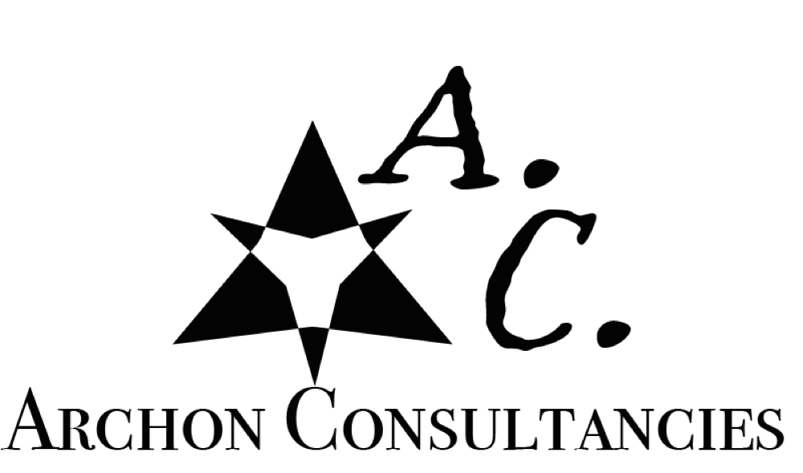
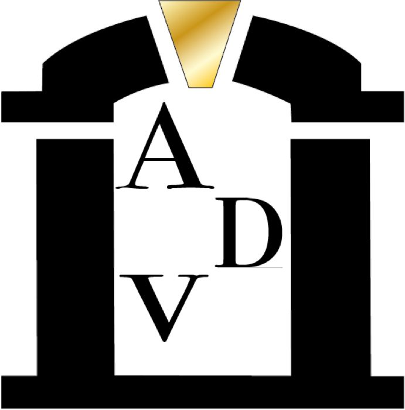
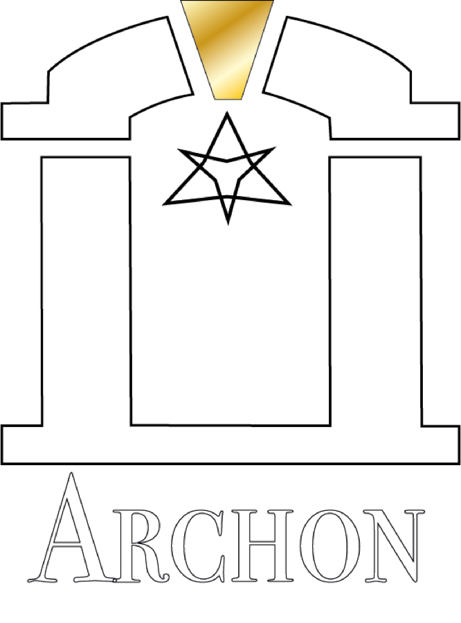
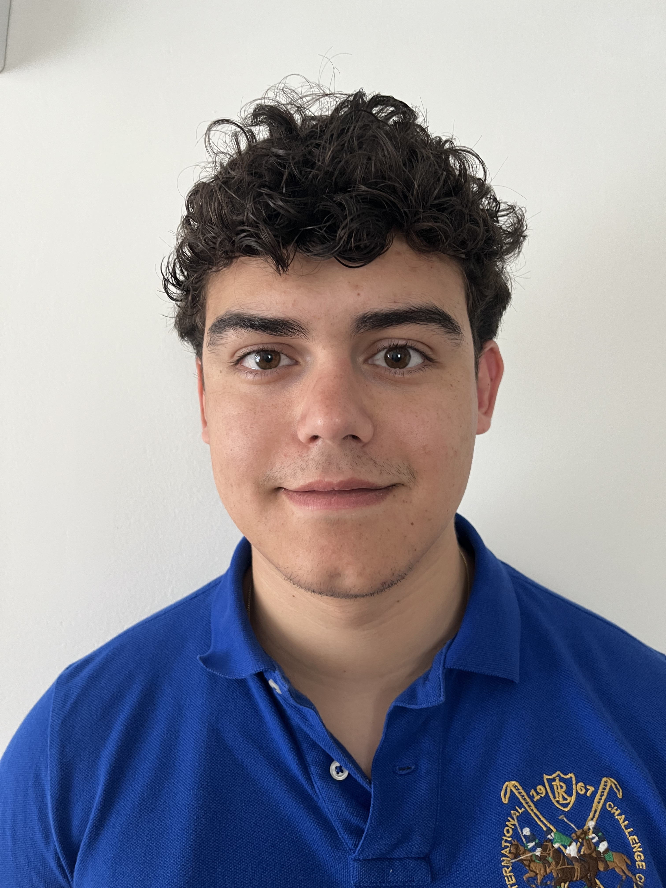
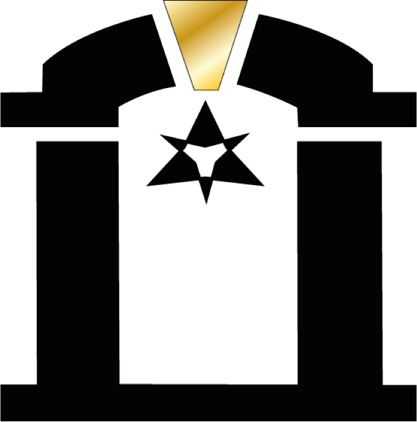
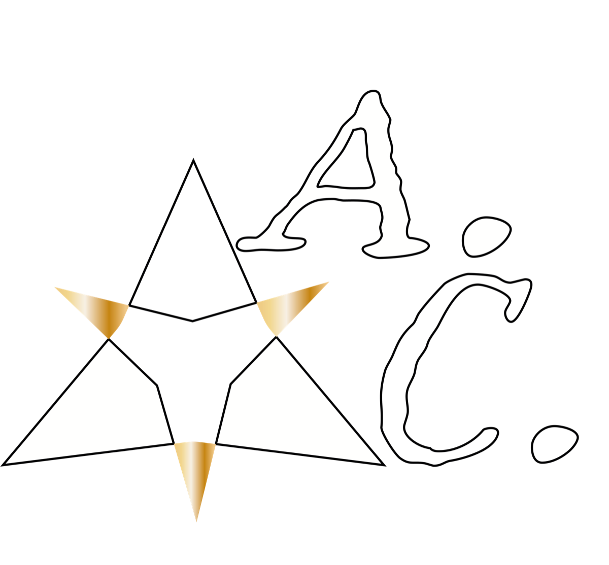
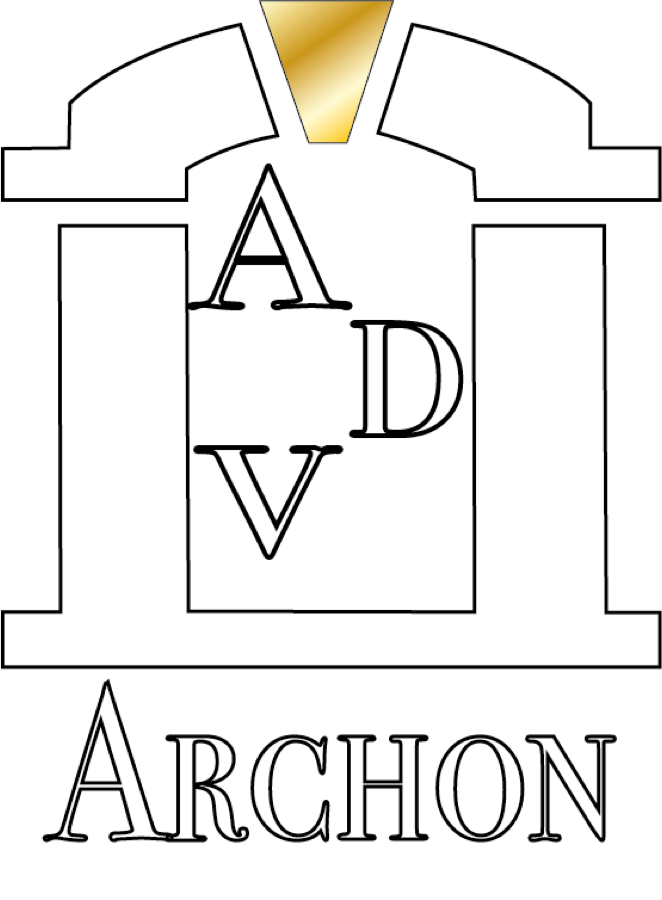

Pablo Alcocer Hurtado · IA + Marketing Creativo
Diseño automatizaciones, productos digitales y experiencias de marca con una idea clara: que la creatividad no se quede en presentación, que funcione como sistema.

Identidad y sistemas visuales, todo enfocado a generar el éxito dentro de las empresas.

IA primera para macOS y la primera local-first para arquitectos.

Plataformas de prueba condicionada por las ondas de Elliott para el trading de cripto activos.

Posicionamiento
Mi perfil vive en el cruce entre inteligencia artificial, marketing creativo, automatización, operaciones y creación digital. No construyo soluciones genéricas: diseño ecosistemas únicos para cada desafío operativo.
Aterrizo inteligencia artificial en procesos concretos, desde una automatización de emails hasta una digitalización de base de datos pasando por un organigrama automático para redes sociales.
Construyo mensajes, campañas y experiencias, todo lo necesario para el éxito rotundo de una marca.
Conecto herramientas, datos y decisiones. Usando Make, n8n, Claude o Python automatizo procesos que ahorran tiempo y dinero a las empresas.
Prototipo webs, asistentes, plantillas y bots, todo lo que una empresa necesita para posicionarse como la más puntera del mercado.
Showcase
Cada proyecto representa una dirección: consultoría IA, automatización, producto digital o identidad.

AI · Marketing · E-commerce
Archon Consultancies
La marca y laboratorio de consultoría donde convierto operaciones de e-commerce en sistemas automatizados, auditables y medibles con IA.
Ver proyecto ↗
Trading · Python · Risk
QuantBot
Bot de trading algorítmico para Binance Spot: señales, estrategia Elliott Wave Proxy, gestión de riesgo, backtesting y modo paper/live.
Ver proyecto ↗
AI Video · Creative Ops
OpenStudio
Plataforma de producción creativa con IA que une generación de assets, vídeo, lip sync y pipelines agentic end-to-end.
Ver proyecto ↗Local AI · MacOS
ADV Archon
Asistente local-first de terminal para macOS, con memoria SQLite, contexto del sistema, Gemini/Ollama y conectores personales.
Ver proyecto ↗Template · Web
Tarjeta contacto
Plantilla pública de tarjeta de contacto digital con QR y vCard, pensada para clonarse y publicarse fácilmente con GitHub Pages.
Ver proyecto ↗Identity · GitHub
palcocerhurtado-tech
Repositorio de identidad pública en GitHub: base para mostrar perfil, enlaces, proyectos y presencia técnica personal.
Ver proyecto ↗Ecosistema creativo
Mis proyectos no son piezas aisladas. Son pruebas de una misma dirección: construir sistemas útiles donde IA, marketing y producto se cruzan.

Perfil
Certificaciones